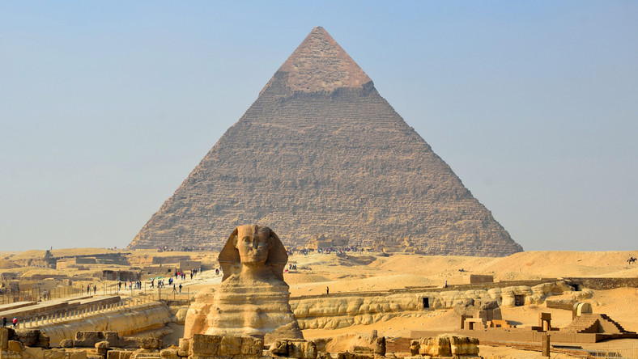
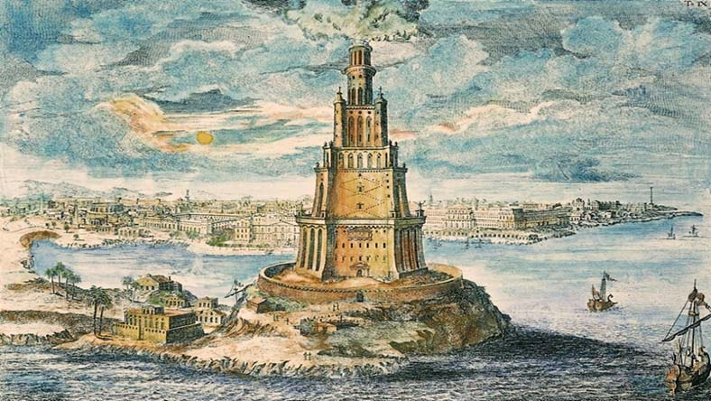

Piramida znajdująca się w Egipcie na płaskowyżu w Gizie. Zbudowana w okresie Starego Państwa ok. 2560 lat p.n.e. z przeznaczeniem na grobowiec faraona Cheopsa, prawdopodobnie według projektu Hemona. W egiptologii przyjmuje się, że czas budowy wynosił ok. 20 lat. Wielka Piramida jest częścią nekropolii memfickiej. W starożytności uznana została za jeden z siedmiu cudów świata i jako jedyny z nich dotrwała epoki nowożytnej, chociaż nie bez szwanku: straciła licówkę i skarby.
| Państwo: | Egipt |
| Miejscowość: | Giza |
| Architekt: | Hemiunu |
| Wysokość dawniej: | 146,59m |
| Wysokość obecnie: | 138,75m |
| Ukończenie budowy: | 2560 p.n.e. |
Wiszące ogrody królowej Semiramidy w Babilonie – jeden z siedmiu cudów świata starożytnego zbudowany na polecenie króla Nabuchodonozora II (604–562 p.n.e.), który podarował je swojej żonie, Amytis. Niezwykłość wiszących ogrodów budziła podziw wszystkich ludzi współczesnych a także zdumienie i wielkie zainteresowanie potomnych. Opisywali je często historycy greccy, a od czasów Aleksandra Wielkiego zalicza się je do siedmiu cudów świata. Zostały zbudowane na polecenie wielkiego króla Nabuchodonozora II, który podarował je swojej żonie, Amytis, ponieważ po przyjeździe do Babilonu bardzo tęskniła za bujną zielenią ojczystego kraju – Medii. Niejasne jest, dlaczego nazwano je imieniem Semiramidy, asyryjskiej królowej, która żyła dwa wieki wcześniej.

Była to świątynia o wymiarach 130 m na 69 m, zbudowana na rozkaz króla Lidii Krezusa około 560 p.n.e. Najprawdopodobniej stanęła na miejscu wcześniejszej budowli zniszczonej podczas najazdu Kimmerów (zdaniem Pliniusza świątynia była dziewięć razy budowana i burzona). Jońska świątynia została zaprojektowana przez Chersifrona i Metagenesa z Knossos, przy współpracy Teodorosa z Samos. Do jej budowy użyto doskonałej jakości marmuru i cedru libańskiego. Świątynia została zaprojektowana jako dipteros otoczony podwójną kolumnadą złożoną z ośmiu kolumn przed elewacją frontową i tylną (tzw. oktastylos) i dwudziestu kolumn wzdłuż boków świątyni. Pozostałe kolumny, a było ich w sumie 117, umieszczono w pronaosie i wewnątrz świątyni. Kolumny o wysokości ok. 18,0 m miały średnicę w dolnej części 2,5 m. Zdobiły je w dolnej części płaskorzeźby. Rzeźby zdobiły także fryz i najprawdopodobniej tympanon oraz dach świątyni. W jej wnętrzu umieszczono cedrowy posąg Artemidy. Wśród rzeźbiarzy zaangażowanych do prac przy budowie znaleźli się między innymi: Fidiasz, Poliklet, Kresilas. Ukończenie budowli zajęło 120 lat.

Rzeźba przedstawiała siedzącego na tronie Zeusa o poważnym i dostojnym obliczu. Na głowie miał wieniec z gałązek oliwnych, z lewego ramienia zwisał mu złoty płaszcz, w prawej dłoni trzymał statuę bogini Nike, a lewą rękę wspierał na wykładanym szlachetnymi kamieniami berle. Na rzeźbionych oparciach i nogach tronu ukazano postaci bóstw i sceny bitewne. Szatę i włosy Zeusa wykonano ze złota, obnażone części ciała z kości słoniowej, tron z drewna cedrowego wykładanego hebanem i szlachetnymi kamieniami. Rzeźba stała w świątyni w Olimpii przez ok. 800 lat. Po wprowadzeniu zakazu igrzysk olimpijskich posąg został wywieziony do Konstantynopola ok. 420 roku, gdzie przepadł w pożarze w roku 475.

Grobowiec Mauzolosa, perskiego satrapy Karii wzniesiony ok. 350 p.n.e. Budynek został zaprojektowany przez architektów Satyrosa i Pyteosa na polecenie królowej-wdowy – Artemizji. Ozdobili go natomiast rzeźbiarze Skopas, Leochares, Timoteos i Bryaksis z Karii. Mauzoleum nie przetrwało do naszych czasów – zaniedbana budowla pod wpływem upływu czasu, działań ludzi i trzęsień ziemi stopniowo popadała w ruinę. W 1404 roku tylko fundamenty i podstawa budynku pozostawały całe. W 1494 i 1522 joannici zagrożeni najazdem muzułmanów używali surowców z mauzoleum, aby wzmocnić swoją siedzibę, Zamek św. Piotra. W trakcie rozbiórki mauzoleum odkryty został sarkofag Mauzolosa, który następnie zaginął. Część zabytków z mauzoleum, m.in. rzeźby, znajduje się w British Museum w Londynie.

To olbrzymich rozmiarów posąg Heliosa, greckiego bóstwa słońca, wybudowany na wyspie Rodos przez Charesa z Lindos w latach 294–282 p.n.e.Wykonano go z brązu i ustawiono u wejścia do portu Rodos dla upamiętnienia niepowodzenia Demetriusza Poliorketesa, który w latach 305–304 p.n.e. oblegał miasto. Posąg miał 30-32 metry wysokości, stał na 10-metrowym piedestale. Według starożytnych przekazów sama metalowa konstrukcja monumentu ważyła dwadzieścia ton, jednak ta wartość wydaje się mocno niedoszacowana, skoro Statua Wolności waży 225 ton. Posąg został zniszczony w 227/226 p.n.e., w wyniku trzęsienia ziemi. Jest to jeden z siedmiu cudów świata starożytnego.

Starożytna latarnia morska zbudowana około 280-279 p.n.e., ze względu na wielkość i wspaniałość architektonicznego ukształtowania uważana za jeden z siedmiu cudów świata starożytnego. Wzniesiona na podstawie planów Sostratosa (możliwe, iż pomysłodawcą budowy był sam Aleksander Macedoński) na polecenie Ptolemeusza I, ukończona podczas rządów jego syna Ptolemeusza II. Budowa obiektu trwała ok. 14-20 lat; uroczyste oddanie do użytku miało miejsce w 279 p.n.e. Według legendy Ptolemeusz II miał w niej zamknąć 72 uczonych w piśmie, w osobnych pomieszczeniach, by niezależnie od siebie dokonali przekładu Starego Testamentu. W odległej o kilkadziesiąt kilometrów od Aleksandrii miejscowości Taposiris Magna znajduje się pomniejszona replika tej latarni wzniesiona za Ptolemeusza II.
